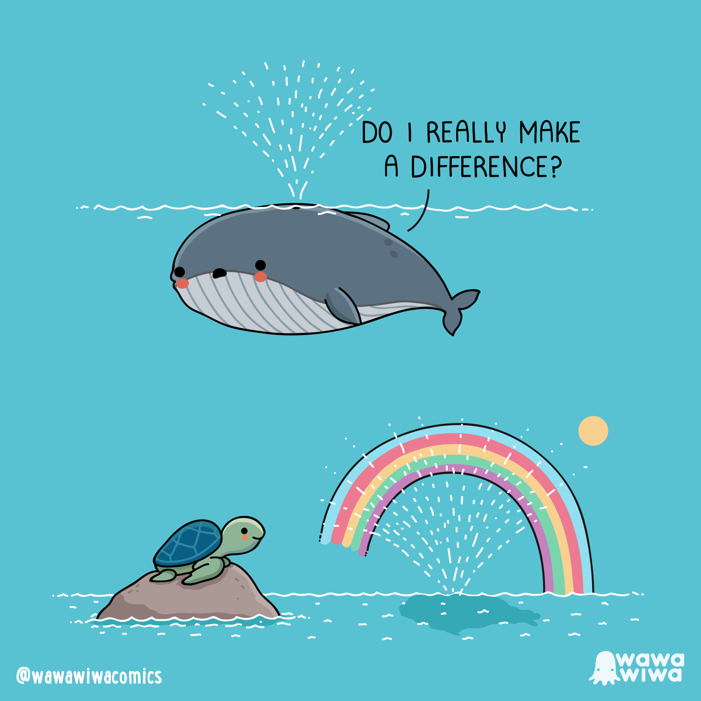
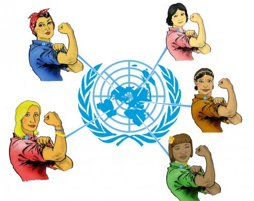

Home
Motivation
About
Motivation
My motivation is mostly driven to make a difference in making the world a better place. Particularly I want to make a small changes for people who are in small groups in the eye of society and that they would get a better world through these changes. Because small changes can make a big impact to the world.
my characteristics
My characteristics are diverse but all together they are pretty usefull. I am precise, persistent,
My goals
There are different goals I have set for the coming years, so I have a personal and professional goals that I want to achive.
My personal goals are: get use to the workload that there is; asking questions and asking for help; also asking the right questions so I know what I need to do; develop myself futher as a programmer.
My professional goals are: finding the IT work that gets my attention the most; the right employer; making a difference for the better.

